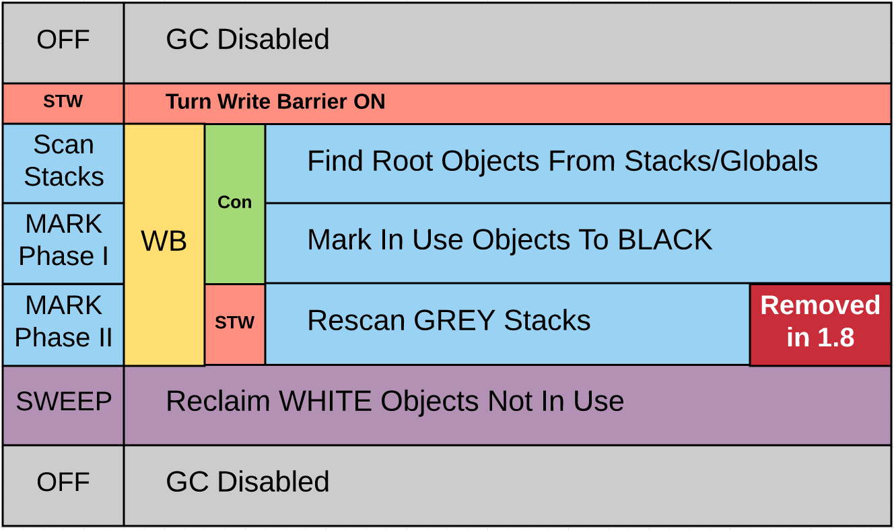

Go的垃圾回收
1. GC算法
go1.5以前使用标记清除法(Mark-Sweep)：
- 从程序根节点开始递归遍历所有对象，将能遍历到的对象打上标记
- 将所有未标记的的对象当作垃圾销毁
- 不用担心循环引用问题，但是需要一段时间来暂停程序以便标记
go1.5后采用的是三色标记算法(white-grey-black)：

打开write barrier(写屏障)
write barrier是编译器在每个内存写操作前生成的一个小的代码段，用于在golang gc时监控指针的引用操作，防止误回收。
将所有
escape to heap的对象放入白色集合中- 遍历程序栈(非递归)，将遍历到白色集合中的对象放入灰色集合中
- 遍历灰色集合中的对象，将遍历到的灰色对象放到黑色集合中，并将此灰色对象引用到的白色对象放入灰色集合中
- 重复4，直到灰色集合中没有对象。在此过程中，若write barrier检测到有黑色对象引用了白色对象，会将此白色对象放入灰色集合中
- 回收掉白色集合中的对象
2. STW(Stop the World)
golang在进行GC的时候是需要一小段时间来暂停程序的运行的。golang每升级一个大版本，都会对GC做一定的优化，以提升GC效率、缩短STW的时间：
- go1.4前使用标记清除法，在每次GC标记内存对象时都需要一段STW时间(毫秒到秒级)
- go1.4并行处理标记和清理协程，但是仍然需要在标记时STW
- go1.5-1.7使用三色标记算法，只在
write barrier和rescan grey stacks时STW(毫秒级) - go1.8使用
hybrid write barrier，去除了rescan grey stacks的STW，STW时间在10-100微秒 - go1.9后提升了对大对象的收集效率，STW时间基本稳定在100微秒内
3. 减轻GC压力
golang gc的时间长短，主要和待GC的对象数量有关，待GC的对象越少，GC的时间越短。
3.1. sync.Pool
临时对象池，用于复用已产生的对象，减少程序内对象的数量，减轻GC压力。sync.Pool是并发安全的。
参考链接：